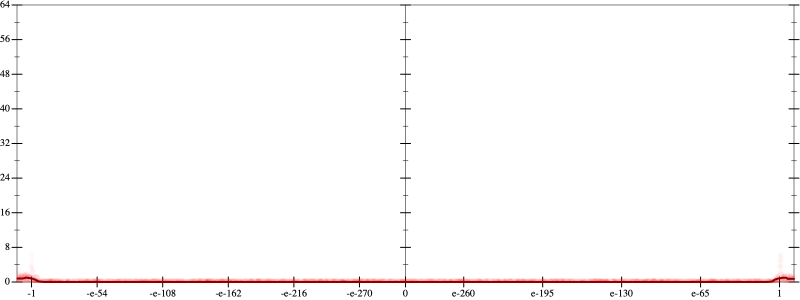
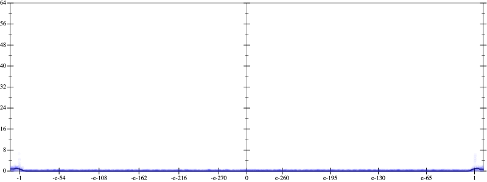
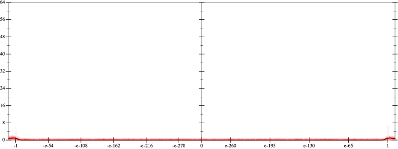
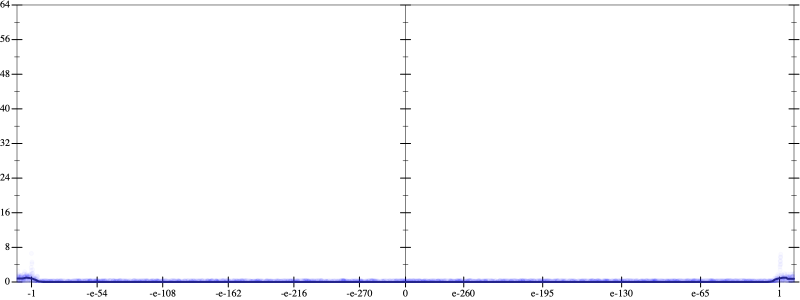
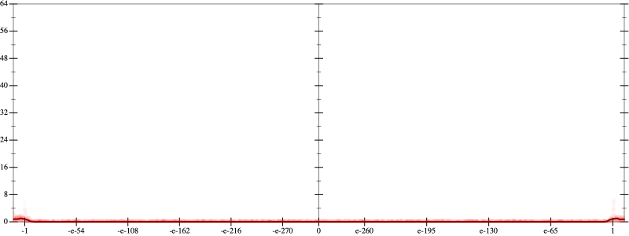
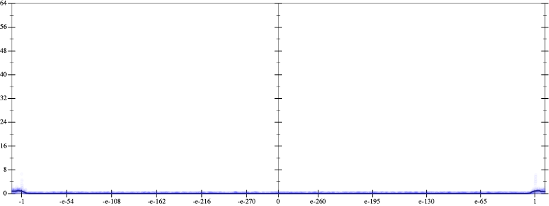

Error
 
Bits error versus x
Bits error versus x
Results
Initial program 0.0
Time bar (total: 37.5s)Debug log
herbie shell --seed 156826660
(FPCore (x)
:name "12"
:pre (and (>= x -1000000000000.0) (<= x 1000000000000.0))
(+ (+ (+ (+ (+ (+ 665280.0 (* -7983360.0 (* x x))) (* 13305600.0 (* (* (* x x) x) x))) (* -7096320.0 (* (* (* (* (* x x) x) x) x) x))) (* 1520640.0 (* (* (* (* (* (* (* x x) x) x) x) x) x) x))) (* -135168.0 (* (* (* (* (* (* (* (* (* x x) x) x) x) x) x) x) x) x))) (* 4096.0 (* (* (* (* (* (* (* (* (* (* (* x x) x) x) x) x) x) x) x) x) x) x))))